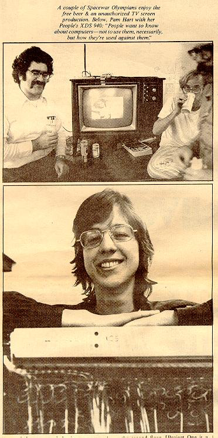
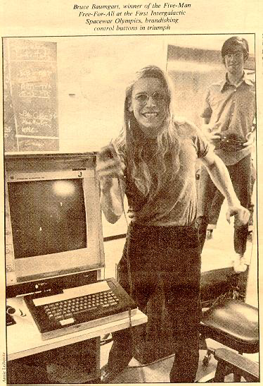
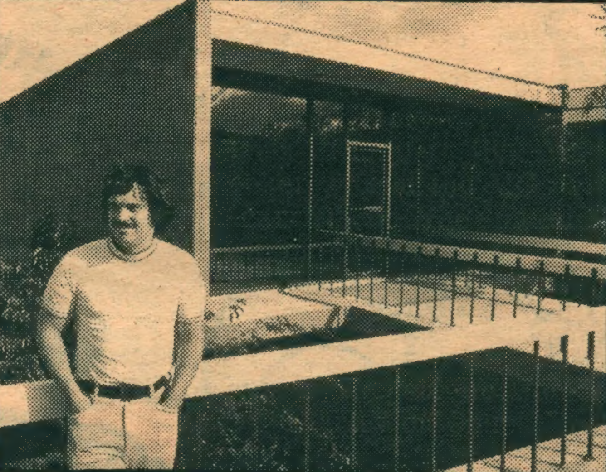
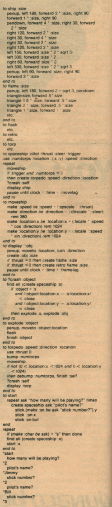
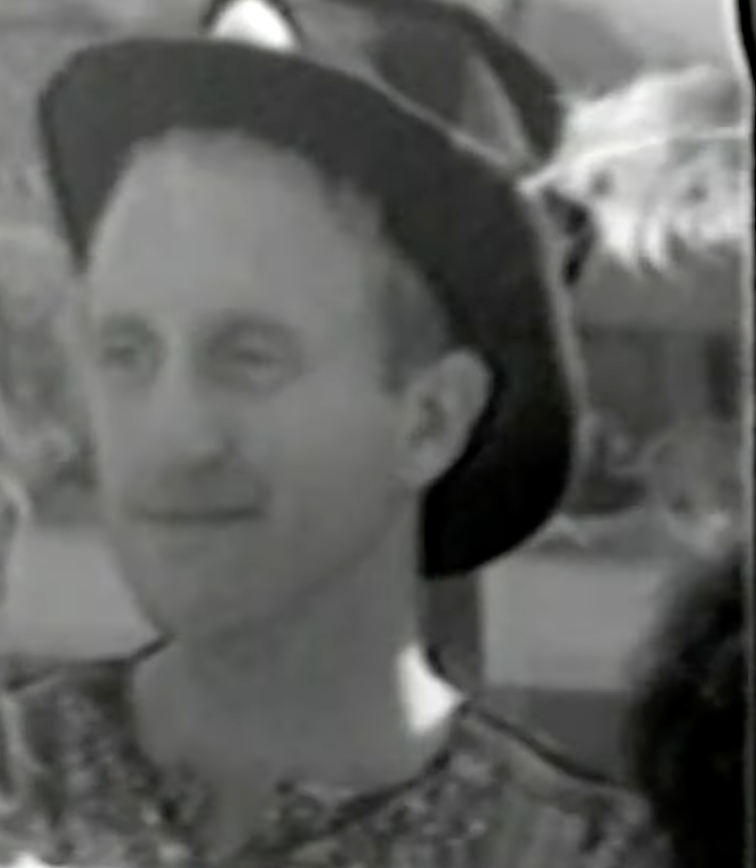

Spacewar at Stanford, and the first tournament
One thread of Spacewar!'s long journey runs west to the Stanford Artificial Intelligence Laboratory (SAIL), where the game became the centre of a working culture and then, on one evening in 1972, the occasion for what is often called the first video-game tournament. The same place produced the definitive multi-player version of the game and the article that first carried hacker culture to a mass audience.
The game goes west

Gorin's Space War, revised in September 1971 and again in February 1972 with R. Taylor, was a long way from the two-ship duel of 1962. It supported up to five ships at once, with a richer physics and a set of options a player could turn on or off. Its source survives and is hosted here, recovered from the Stanford SAILDART archive and cleaned back to readable assembler.
The Intergalactic Spacewar Olympics

Brand's article, "SPACEWAR: Fanatic Life and Symbolic Death Among the Computer Bums" (Rolling Stone, 7 December 1972), opens with a sentence that reads now like a prophecy: "Ready or not, computers are coming to the people. That's good news, maybe the best since psychedelics." It was among the first times the closed world of the research labs, its games and its values, was described from the inside for a general readership. The Olympics are now widely cited as the first video-game tournament; as Brand likes to point out, the first Pong machine would not be switched on for another six weeks.
A game that edits its own rules
GETNAM, that reads named parameters from the console and writes them into the running program, so the block of constants that fixes gravity, fuel, torpedo speed and the rest became a live editor for the rules of the world. Where the MIT game hard-coded its physics, the SAIL game exposed it.
This is the same move the laboratory made with everything else it touched: the artefact is not a fixed object but a configurable instrument, opened up for the user to retune. The Olympics could set "expert" parameters precisely because the game had been built to be reset. Read as code, Gorin's Space War is less a program than a small piece of apparatus, the constants block grown into a console.
A game you could build for $730

And Brand printed Kay's own sketch of the program, written not in PDP assembler but in a LOGO-like turtle-graphics notation (penup, pendown, forward, right), the same family of ideas Kay was then turning toward Smalltalk and a computer simple enough for children. The ship is drawn as a turtle walks its outline; the physics is the four lines of moveship; the whole game is a page of readable procedures:

to ship :size
penup, left 180, forward 2 * :size, right 90
forward 1 * :size, right 90
pendown, forward 4 * :size, right 30, forward 2 * :size
right 120, forward 2 * :size
right 30, forward 4 * :size
right 30, forward 2 * :size
right 120, forward 2 * :size
left 150, forward :size * 2 * sqrt 3
left 330, forward :size * 2
right 60, forward :size * 2
left 330, forward :size * 2 * sqrt 3
penup, left 90, forward :size, right 90
forward 2 * :size
end to
to spaceship :pilot :thrust :steer :trigger
use :numtorps :location (:x :y) :speed :direction
repeat
moveship
if :trigger and :numtorps < 3
then create torpedo :speed :direction :location
?crash :self
display ship
pause until clock = :time + :movelag
end to
to moveship
make :speed be :speed + (:spscale * :thrust)
make :direction be :direction + (:dirscale * :steer) rem 360
make :location:x be :location:x + (:lscale * :speed * cos :direction) rem 1024
make :location:y be :location:y + (:lscale * :speed * sin :direction) rem 1024
end to
to display :obj
penup, moveto :location, turn :direction
create :obj :size
if :thrust > 0 then create flame :size
if :thrust < 0 then create retro flame :size
pause until clock = :time + :framelag
end to
to ?crash :object
find all (create spaceship :s)
if :object = :s
and /:object:location:x - :s:location:x/ < close
and /:object:location:y - :s:location:y/ < close
then explode :s, explode :obj
end to
to explode :object
penup, moveto :object:location
flash
finish :object
end to
to torpedo :speed :direction :location
use :thrust 0
bump :numtorps
moveship
if not (0 < :location:x < 1024 and 0 < :location:y < 1024)
then debump :numtorps, finish :self
?crash :self
display :torp
end to
to start
repeat ask "how many will be playing?" times
create spaceship ask "pilot's name?"
stick.(make :sn be ask "stick number?").y
stick :sn:x
stick :sn:but
end repeat
repeat
if (make :char be ask) = "s" then done
find all (create spaceship :x)
start :x
end toThe full listing, with the flame, flash, retro and torp stubs and the sample run Brand printed, is transcribed here.
It is a striking document. Ten years after Spacewar! needed a $120,000 PDP-1 and a roomful of expertise, Kay was sketching it as a weekend project, a few hundred dollars of analogue kit and radio-control joysticks, written in a language a child could read. "Though no one has done it yet," Brand admitted, but the gesture makes the article's argument concrete: the game, and the machine under it, were about to belong to anyone who wanted them. The pseudocode is the personal computer arriving as a recipe.
The moment the culture went public

"Four intense hours, much frenzy and skilled concerted action, a 15-ring circus in ten different directions, the most bzz-bzz-busy scene I've been around since Merry Prankster Acid Tests ... and really it's just a normal night at the AI Project, at any suitably hairy computer research project. Something basic ... These are heads, most of them. Half or more of computer science is heads. But that's not it. The rest of the counterculture is laid low and back these days, showing none of this kind of zeal. What, then?" Stewart Brand, Rolling Stone, 1972.
The game written "mainly for fun" at MIT had, ten years later and a continent away, become the thing a generation pointed to when it wanted to say what computers were really for.
References
- Stewart Brand, "SPACEWAR: Fanatic Life and Symbolic Death Among the Computer Bums", Rolling Stone, 7 December 1972, for the Olympics, the winners, and Gorin.
- The Stanford Daily on the fiftieth anniversary of the Olympics (2022).
- Stewart Brand, recalling the tournament, Rolling Stone (2017), for the prize and its timing six weeks before Pong.
- The cleaned SAIL Space War source (R. E. Gorin, 1971; R. Taylor, 1972), from saildart.org.
- Fred Turner, From Counterculture to Cyberculture: Stewart Brand, the Whole Earth Network, and the Rise of Digital Utopianism (University of Chicago Press, 2006), for Brand's path from the Merry Pranksters to computing.
- The Kinephanos study "Space Odyssey: the long journey of Spacewar!" (2015), for the port survey.